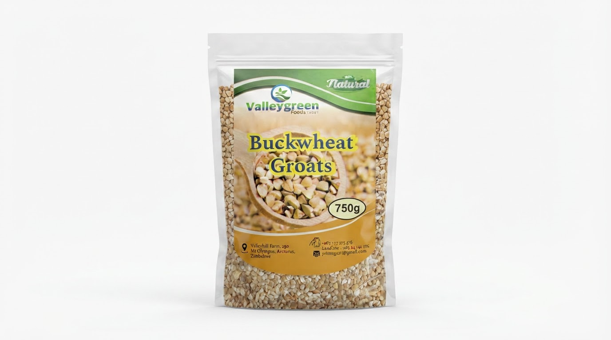

RangeBuckwheat Groats
N°02 · Whole grain
Buckwheat Groats
The whole grain, in its purest form.

Why it matters
The story behind the pack.
Our buckwheat groats are the cleaned, hulled seeds of the buckwheat plant — pale, triangular kernels with a delicate, slightly nutty taste.
Grown in the Zimbabwean highlands and gently processed to preserve their full nutritional profile, they cook in under twenty minutes and form the foundation of the entire Stellar Foods range.
01
Naturally gluten-free
02
Complete plant protein
03
High in fibre & magnesium
04
Low glycaemic index
Pack & supply
How it ships.
Retail pack
750 g
Wholesale
5 kg · 25 kg sacks
Shelf life
12 months
Ways to enjoy
Practical, everyday uses.
01
Stove-top porridge
02
Pilafs and grain bowls
03
Hearty soups and stews
04
Salad bases and side dishes